A user was locked out of their Slack account after forgetting their password and was unable to receive the password reset email.
Despite multiple attempts and checking their spam folder, the email did not arrive. The issue was urgent, as the user needed immediate access to continue their work.
My responsibility was to:
I approached the issue using a “stabilize first, diagnose second” framework:
Below is a real support interaction handled using a live chat tool (HubSpot). This showcases my ability to manage customer urgency, communicate clearly, and resolve issues efficiently in a real environment.
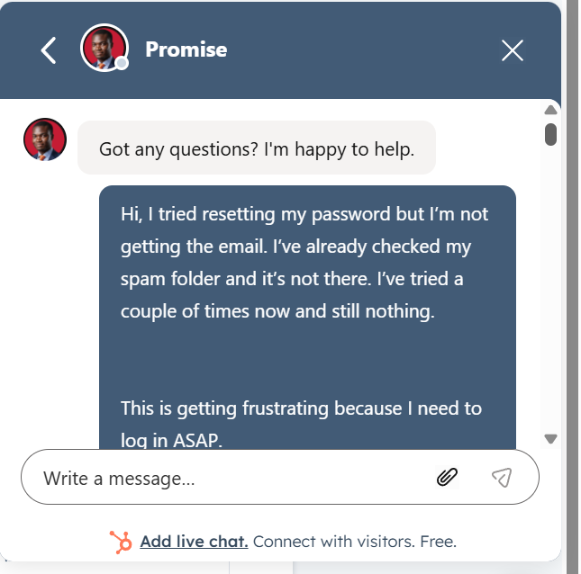
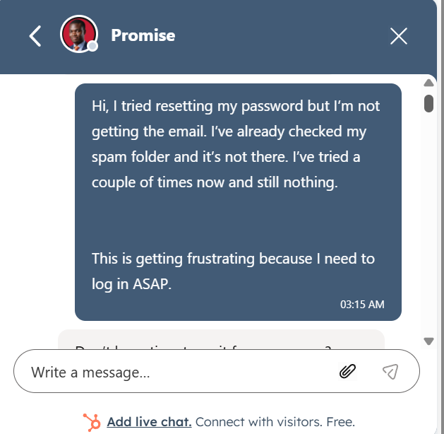
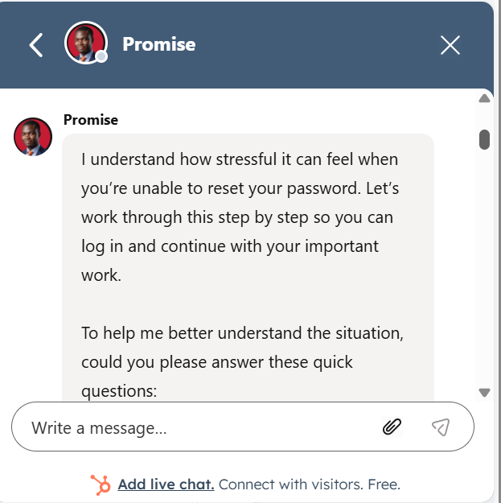
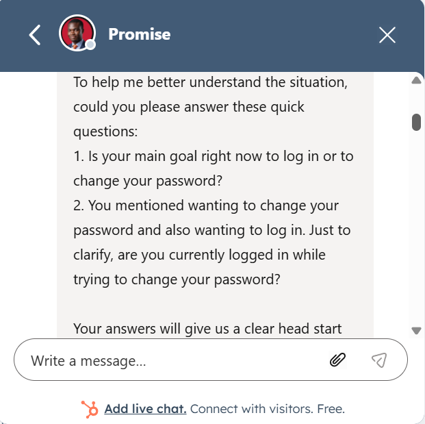
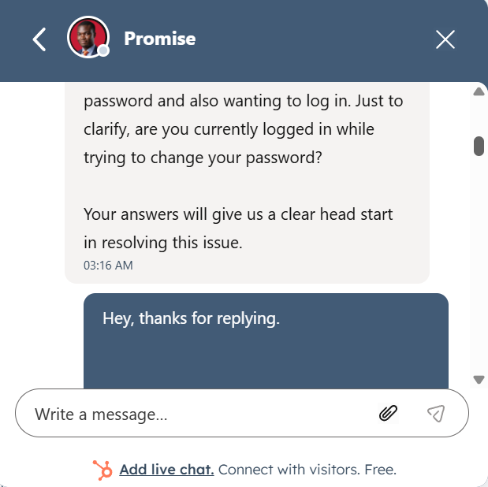
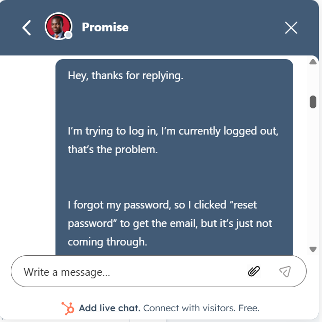
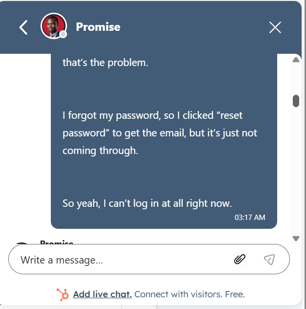
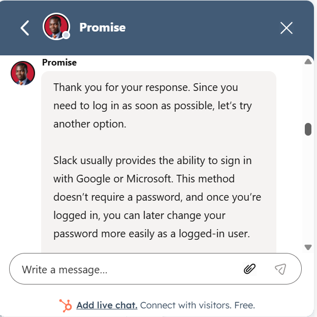
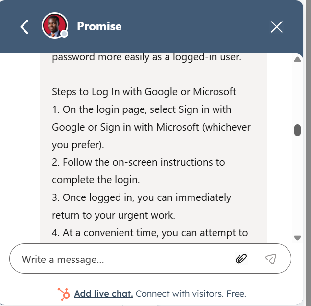
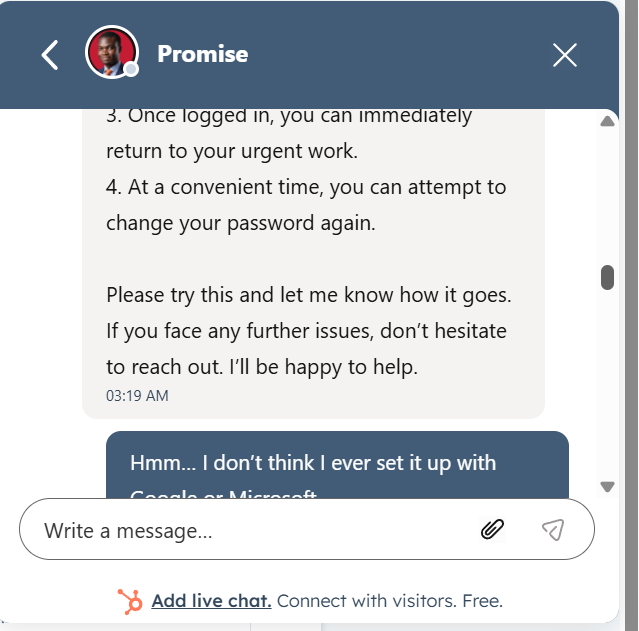
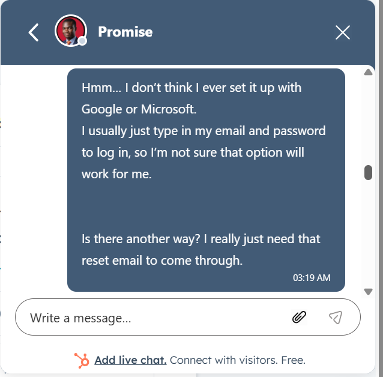
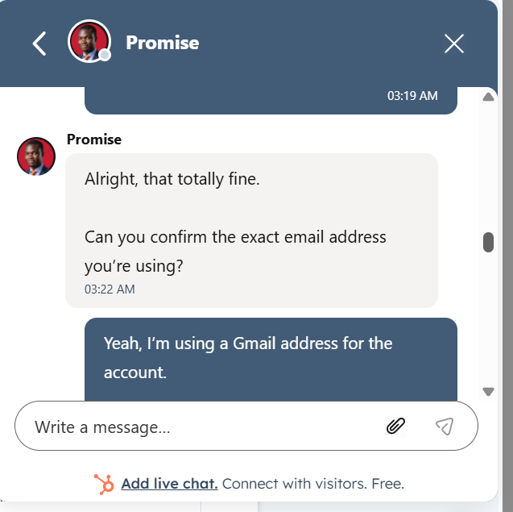
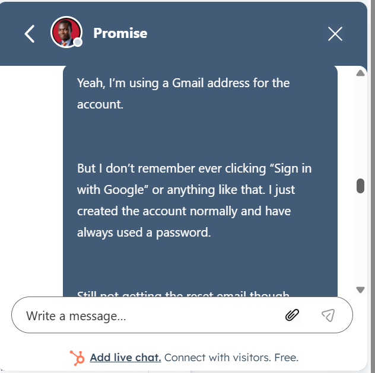
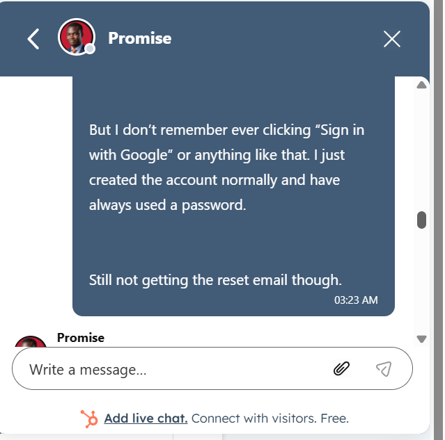
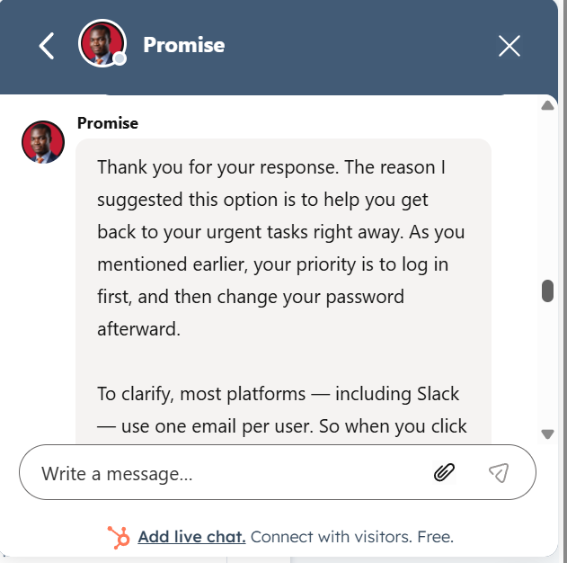
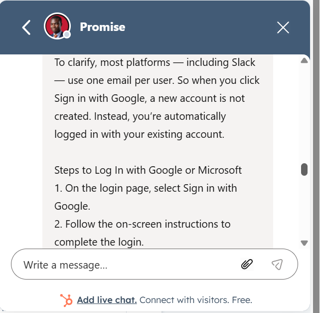
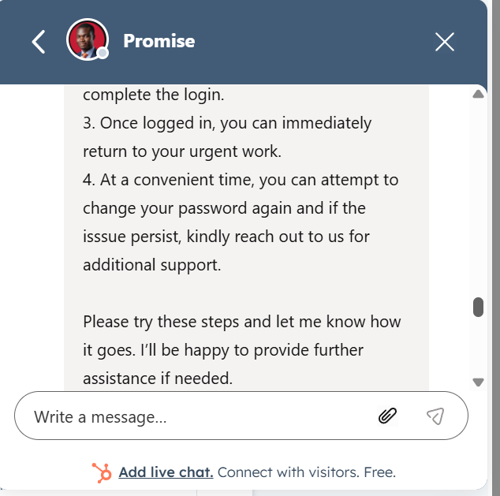
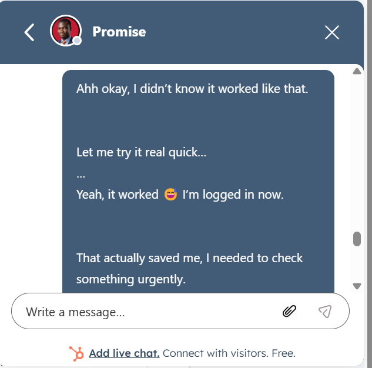
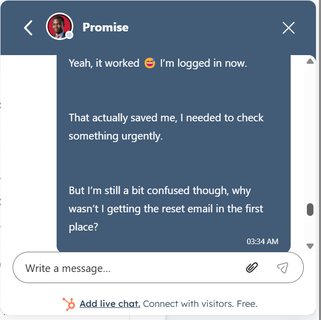
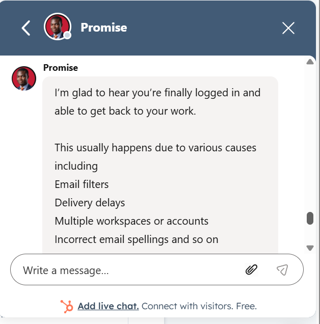
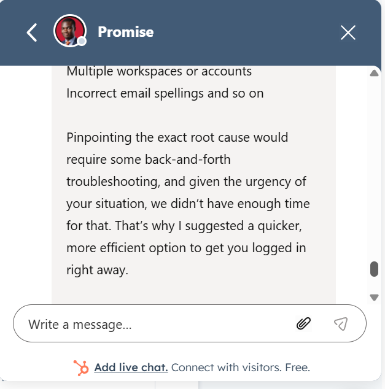
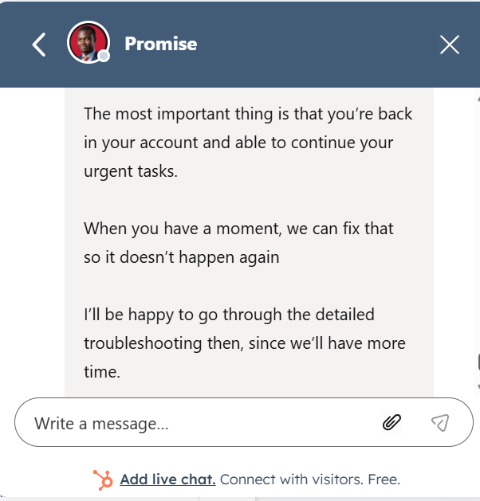
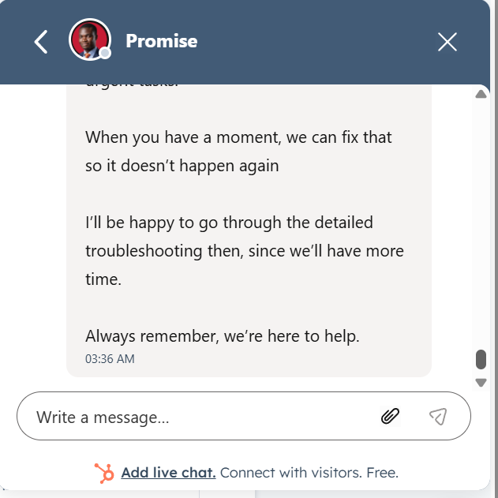
The user was able to resume work immediately and expressed appreciation for the fast and effective resolution.
This case highlights my ability to:
Instead of choosing between speed and accuracy, I applied both:
This reduces
This case study was conducted in a simulated support environment as part of my professional practice routine.
I regularly roleplay real-world customer support scenarios with an AI-based practice partner to sharpen my troubleshooting, communication, and customer management skills.
The goal is to replicate the types of issues support specialists handle daily while continuously improving response quality, clarity, and problem-solving under pressure.